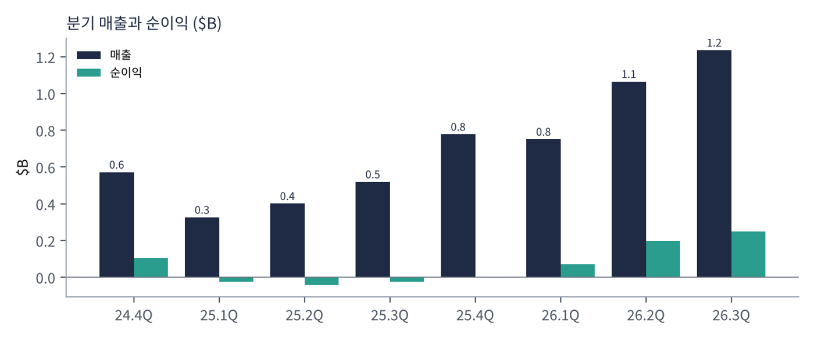
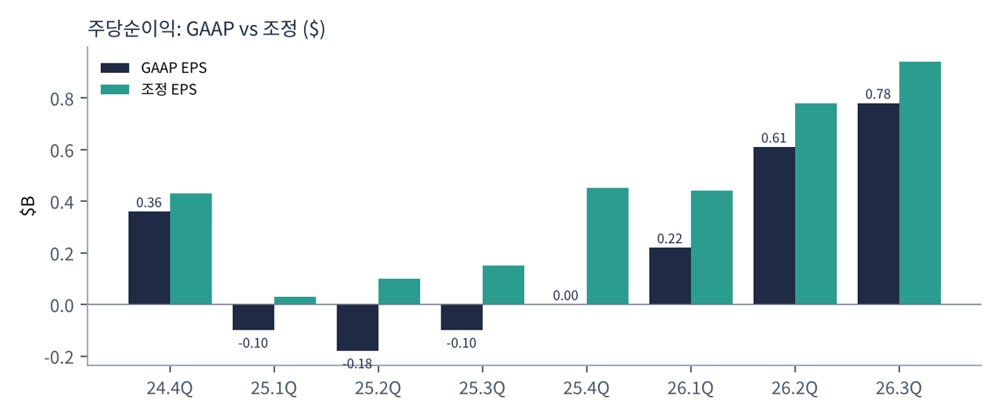
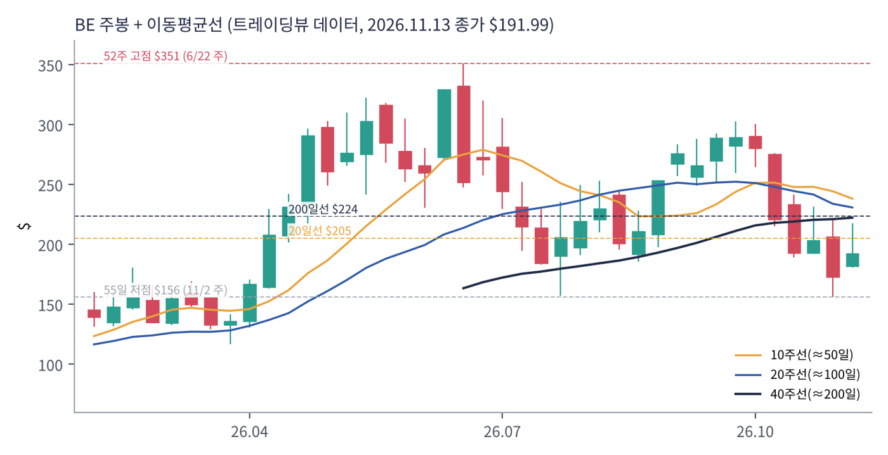
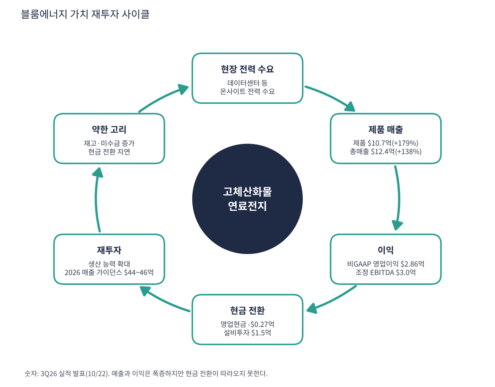

블룸에너지는 고체산화물 연료전지(Energy Server)로 가스·수소 등을 연료 삼아 전기를 만드는 온사이트(현장) 발전 설비 업체다. 데이터센터와 산업 고객에게 전력망 없이도 상시 전력을 공급한다. 3분기 매출이 +138%, 비GAAP 영업이익이 $2.86억으로 폭증하며 올해 세 번째 가이던스 상향을 냈지만, 영업현금흐름은 적자(-$0.27억)이고 PER·P/S가 매우 높은 회사다.
| 항목 | 내용 |
|---|---|
| 종목 | Bloom Energy Corporation (BE) · NYSE · 연료전지·온사이트 발전 · 본사 미국 캘리포니아주 새너제이 · S&P 500 편입 |
| 밸류에이션 | PER 118.9배(GAAP TTM), 조정 73.6배 · P/S 17.1배(스캐너) (11/13 종가 $191.99) |
| 최근 분기(3Q26) | 매출 $12.36억(+138.1%), 제품 매출 $10.74억(+179.4%), 총이익률 33.8%, 영업이익 $2.25억(전년 $0.08억) |
| EPS(3Q) | GAAP $0.78(전년 -$0.10), 비GAAP $0.94(전년 $0.15), 순이익 $2.50억 |
| 현금·부채 | 현금 등 약 $25억, 총차입금 약 $28억, 영업현금 -$0.27억, 잉여현금 -$1.81억(3Q), 설비투자 $1.54억 |
| 가이던스(2026) | 매출 $44~46억(기존 $39~42억, 올해 세 번째 상향) · 비GAAP 영업이익 $9.6~10.3억 · 비GAAP EPS $3.10~3.40 |
| 다음 실적 | 4Q26 실적: 2027년 2월 11일 예정(트레이딩뷰) |
| 직책 | 인물 | 역할·특징 |
|---|---|---|
| 창업자·회장·CEO | KR 스리다르 | '분산형 상시 전력' 비전을 주도. 실적 발표에서 하이퍼스케일러에서 다른 산업으로 수요가 퍼진다고 설명 |
| CFO | 사이먼 에드워즈 | 가이던스 상향과 매출·마진 설명 |
경영 스타일: '수요가 보이는 만큼 생산 능력을 앞서 늘린다'. 3Q에 설비투자를 $1.54억으로 늘렸고(2Q $0.52억), 생산 능력 확대 계획을 밝혔다. 같은 분기에 재고·미수금·계약자산이 현금을 흡수해 영업현금흐름이 적자로 돌아섰다.
연료를 연소하지 않고 전기화학 반응으로 전기를 만드는 방식의 설비를 현장에 설치한다. 전력망 연결을 기다리지 않고 데이터센터에 전기를 공급할 수 있다는 점이 수요를 이끈다.
회사는 전력 구조가 '중앙집중식에서 분산형 현장 발전'으로 옮겨 간다고 본다. 수요가 AI 데이터센터에서 다른 산업으로 넓어지고 있다고 설명한다.
다음 실적발표는 세 가지 질문에 답하는 자리다.
1. 현금이 이번 분기에 개선되나?
2. 악재 '현금 전환' 부담이 줄어드나?
3. PEG 판정이 바뀌나?
한 줄 판정 규칙: 첫 질문의 현금이 좋아지면 약한 고리가 풀리고, 그렇지 않으면 현재 사이클의 약점이 그대로 남는다.
일정: 다음 발표일은 확인 필요(이번 분기 발표 후 일정 미확정). 위 현재값은 이 보고서의 기존 숫자다.
| 분기 | 매출 | 순이익 | EPS | 조정 EPS | 특이 사항 |
|---|---|---|---|---|---|
| 2024.4Q | $5.7억 | $1.1억 | 0.36 | 0.43 | |
| 2025.1Q | $3.3억 | $-0.2억 | -0.10 | 0.03 | |
| 2025.2Q | $4.0억 | $-0.4억 | -0.18 | 0.10 | |
| 2025.3Q | $5.2억 | $-0.2억 | -0.10 | 0.15 | GAAP 순손실 -$0.23억 |
| 2025.4Q | $7.8억 | $0.0억 | 0.00 | 0.45 | GAAP EPS 0.00(조정과 격차, 원인 미확인) |
| 2026.1Q | $7.5억 | $0.7억 | 0.22 | 0.44 | |
| 2026.2Q | $10.7억 | $2.0억 | 0.61 | 0.78 | |
| 2026.3Q | $12.4억 | $2.5억 | 0.78 | 0.94 | 제품 +179%, 영업이익 $2.25억 |


조정 EPS는 트레이딩뷰 'Reported'(비GAAP 희석 EPS) 값이다. 3Q26 GAAP 0.78과 조정 0.94의 차이($0.16)는 비GAAP 조정 항목이며 세부 내역은 확인하지 못했다.
흐름 요약: 분기 매출은 4Q25 $7.8억에서 3Q26 $12.4억으로 3분기 연속 늘었고, 순이익은 2025년 적자(-$0.2~-$0.4억)에서 2026년 $0.7억, $2.0억, $2.5억으로 커졌다. 3Q26 순이익에는 영업외 이익 $0.25억이 들어 있다. 영업이익과 분기 설비투자의 8분기 값은 구하지 못해 표에서 뺐다.
| 구분 | 3Q26 | 전년 3Q25 | 비고 |
|---|---|---|---|
| 제품 | $10.74억 | $3.84억 | +179.4%, 매출의 약 87% |
| 제품 외(서비스·설치·전력 등) | $1.62억 | $1.35억 | 총매출 − 제품(내 계산), +20% |
| 총매출 | $12.36억 | $5.19억 | +138.1% |
매출의 87%가 설비(제품) 판매라 인도 시점에 따라 분기 변동이 크다. 2026년 매출 가이던스 $44~46억은 올해 1~3분기 합계 $29.5억(내 계산)에 4분기 $14.5~16.5억을 더하는 계산이다. 고객 구성은 확인하지 못해 뺐다.
블룸에너지의 방향은 '온사이트 전력 설비를 빠르게 늘려 데이터센터와 산업 고객에게 공급하는 것'이다.
| 축 | 최근 움직임 |
|---|---|
| 가이던스 | 2026 매출 $44~46억, 비GAAP 영업이익 $9.6~10.3억, 비GAAP EPS $3.10~3.40(3회 상향) |
| 생산 능력 | 설비투자 3Q $1.54억, 생산 능력 확대 계획 |
| 지수 편입 | S&P 500 편입(회사 발표) |
| 다음 확인 | 4Q26 실적(2027.2.11)과 2027 가이던스, 현금 전환 |

| 이동평균 | 값 | 종가 대비 | 해석 |
|---|---|---|---|
| 5일선 | $196.54 | -2.3% | 하향 |
| 20일선 | $205.43 | -6.5% | 현재가가 아래 |
| 50일선 | $244.05 | -21.3% | 고점 후 하향 |
| 100일선 | $235.83 | -18.6% | 현재가가 아래 |
| 200일선 | $223.53 | -14.1% | 현재가가 아래 |
주봉 흐름: 2025년 12월 저점 $75.7(12/17) → 2026년 4~6월 급등 → 6/22 주 고점 $351 → 7월 $184~215 → 9월 $302 → 10/12 주 급락(종가 $221) → 11/2 주 저가 $156 → 실적 발표 주(11/9) 종가 $192.
| 규칙 | 기준 | 현재 값 | 신호 |
|---|---|---|---|
| 장기 추세 필터 | 종가 vs 200일선 | $191.99 < $223.53 | 매도 |
| 중장기 교차 | 50일선 vs 200일선 | $244.05 > $223.53 | 매수 |
| 단기 교차 | 20일선 vs 50일선 | $205.43 < $244.05 | 매도 |
| 돈키언 채널 | 55일 고가 $302.35 / 저가 $156.00 | 중간값 $229.18 아래 | 매도 |
| 1개월 모멘텀 | 21거래일 수익률 | -18.8% (기준 $236.30) | 매도 |
| 3개월 모멘텀 | 63거래일 수익률 | -17.3% (기준 $232.16) | 매도 |
| 6개월 모멘텀 | 126거래일 수익률 | -30.4% (기준 $275.95) | 매도 |
| 12개월 모멘텀 | 252거래일 수익률 | +51.5% (기준 $126.72) | 매수 |
| 종합 (8개 평균) | -0.50 | 매도 우위 |
해석: 8개 중 2개 매수(50/200일선, 12개월 모멘텀), 6개 매도로 -0.50(매도 우위). 현재가 $191.99는 200일선($223.5)과 20일선($205.4) 아래다. 14일 ATR $22.11 (11.5%)로 변동이 매우 크다(가격의 약 11.5%).
| 가격 | 무엇이 바뀌나 | 의미 |
|---|---|---|
| $205 상향 돌파 | 20일선 | 단기 추세 회복 신호 |
| $223.5 상향 돌파 | 200일선 | 장기 추세 필터 매도 → 매수 |
| $229 상향 돌파 | 돈키언 중간값 | 55일 채널 매수 전환 |
| $232~236 상향 돌파 | 3개월·1개월 모멘텀 | 추가 2개 전환 |
| $126.7 이탈 | 12개월 모멘텀 | 현재 매수 신호가 매도로 |
| 구분 | 가격대 | 근거 |
|---|---|---|
| 저항 1 | $205 | 20일선 |
| 저항 2 | $223 ~ 229 | 200일선·돈키언 중간값 |
| 지지 1 | $180.5 | 11/9 주 저가 |
| 지지 2 | $156 | 11/2 주 저가(55일 저점) |
추세 추종으로는 매수 구간이 아니다. 역추세라면 $170~190에서 계획 비중의 30%만 진입하고 종가 $150(11/2 주 저점 $156 아래) 이탈 시 손절한다. 1차 목표 $205(20일선), 2차 $224(200일선, 내 가정).
| 악재 요인 | 내용 | 강도 |
|---|---|---|
| 현금 전환 | 영업현금 -$0.27억, 재고·미수금·계약자산 증가 | 높음 |
| 밸류에이션 | 조정 PER 74배, P/S 15~17배 | 높음 |
| 외부 환경 | 데이터센터 금융, 관세, 세제 정책(회사 공시 위험 요인) | 중간 |
| GAAP·조정 EPS 격차 | 3Q $0.78 vs $0.94 | 참고 |
| 티커 | 회사 | PER(TTM) | PEG | P/S | EPS 성장(YoY) |
|---|---|---|---|---|---|
| BE | 블룸에너지 | 73.6배 | 0.28 | 17.10배 | +268% |
| VRT | 버티브 | 37.8배 | – | 6.28배 | +102% |
| GEV | GE 버노바 | 21.1배 | – | 4.98배 | – |
| CEG | 컨스텔레이션 | 22.2배 | 0.68 | 2.98배 | +33% |
| VST | 비스트라 | 18.0배 | – | 2.21배 | +165% |
BE의 PER·PEG·성장률은 조정 EPS 기준(PEG는 기저 효과)이고 나머지는 트레이딩뷰 GAAP TTM이다(CEG는 조정).
BE는 현금은 넉넉하지만 이익이 현금으로 바뀌지 않는 성장 국면이다. 3Q 영업현금흐름이 -$0.27억(전분기 +$2.26억), 잉여현금이 약 -$1.81억이다. 재고·미수금·계약자산 증가가 원인이라고 회사 발표를 전한 기사가 설명한다.
| 지표 | 값 | 계산·출처 | 해석 |
|---|---|---|---|
| 현금 등 | 약 $25억 | 스캐너·회사 발표($24.9억) | 유동성은 충분하나 용도(설비·운전자본) 확인 필요 |
| 총차입금 | 약 $28억 | 스캐너 | 순부채 약 $3억(내 계산), 구성은 미확인 |
| TTM EBITDA | 약 $6억 | 스캐너 | 3Q 조정 EBITDA $3.0억 ×4 ≈ $12.0억(내 계산) |
| TTM 잉여현금흐름 | 약 $4억 | 스캐너 | 3Q만 보면 -$1.81억 |
| 3Q 설비투자 | $1.54억 | 기사 인용 | 2Q $0.52억의 약 3배 |
| 기준 | 값 | 비고 |
|---|---|---|
| P/S (스캐너) | 17.1배 | 트레이딩뷰 값 |
| P/S (내 계산) | 약 14.8배 | TTM 매출 $38.3억 — 스캐너 값과 차이 원인 미확인 |
| P/S (2026 가이던스 중간 $45억) | 약 12.6배 | 가이던스 중간값(내 계산) |
| 동종 | 버티브 6.3, GEV 5.0, CEG 3.0, VST 2.2 | 11/13 스캐너 |
해석: 매출 대비 가치가 동종보다 훨씬 높다. 이익 기준 스트레스 가정(2026 비GAAP 영업이익 가이던스 중간 $9.95억, 순부채 $3억, 주식 2.96억 주 고정, 내 가정): EV/영업이익 30배면 주가 약 $100(-48%), 40배면 $134(-30%), 50배면 $167(-13%)이다. 현재는 약 57배다.
| 지표 | 값 | 판정 |
|---|---|---|
| PER (GAAP TTM) | 118.9배 | TTM EPS $1.61 |
| PER (조정 TTM) | 73.6배 | 최근 4분기 Reported EPS 합 $2.61 (내 계산) |
| PER (2026 가이던스 중간 $3.25) | 59.1배 | 내 계산 |
| EV / EBITDA (TTM) | 약 95배 | EV(차입금 $28억 − 현금 $25억 반영) ÷ $6억 |
| EV / 연환산 3Q 조정 EBITDA | 약 48배 | $3.0억 ×4 = $12.0억 (내 계산) |
| EV / 2026 비GAAP 영업이익 중간 | 약 57배 | ÷ $9.95억 (내 계산) |
| 방식 | PER | EPS 성장률 | PEG | 판정 |
|---|---|---|---|---|
| 트레이딩뷰 (GAAP TTM) | 118.9배 | 0.0%(표시) | – | 직전 TTM이 -$0.02로 거의 0이라 계산 불가 |
| 조정(Reported) TTM $2.61 ÷ 직전 TTM $0.71 | 73.6배 | +268% | 0.28 | 적극 매수 기저 효과 · 내 계산 |
| 2026 가이던스 중간 $3.25 ÷ 2025 조정 EPS $0.73 | 59.1배 | +345% | 약 0.17 | 적극 매수 기저 효과 · 내 계산 |
| 직전 TTM 구성 | – | – | – | 4Q24 0.43 + 1Q25 0.03 + 2Q25 0.10 + 3Q25 0.15 |
판정: 조정 PEG는 0.28로 표면상 적극 매수 구간이지만 신뢰하기 어렵다. 직전 4분기 조정 EPS가 $0.71로 매우 낮아 성장률이 +268%로 부풀었다. 같은 PER 73.6배를 2027년 이익 성장률로 나눠야 하는데 2027 가이던스는 아직 없다. EV/영업이익 약 57배라는 높은 기대가 이미 가격에 들어 있다.

사이클은 온사이트 전력 수요 → 제품 매출 → 이익 → 현금 → 생산 확대다. 현금 전환이 약한 고리다.
| 고리 | 현재 숫자 | 고리 강도 | 약해지는 신호 |
|---|---|---|---|
| ① 수요 | 가이던스 3회 상향, 데이터센터 외 확산 | 강함 | 데이터센터 투자·금융 둔화 |
| ② 매출 | 제품 +179%, 총매출 $12.4억 | 강함 | 인도 지연 |
| ③ 이익 | 비GAAP 영업이익 $2.86억(23%) | 강함 | 총이익률 하락 |
| ④ 현금 | 영업현금 -$0.27억, 잉여현금 -$1.81억 | 약함 | 재고·미수금 추가 증가 |
| ⑤ 재투자 | 설비투자 $1.54억(전분기 3배) | 진행 | 투자 대비 매출 지연 |
| ⑥ 약한 고리 | 재고·미수금 증가, 현금 전환 지연 | 부담 | 현금 전환 추가 지연 |
구조: 강한 고리는 ①②③, 약한 고리는 ④⑤⑥이다.